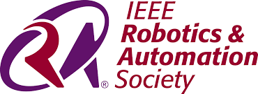
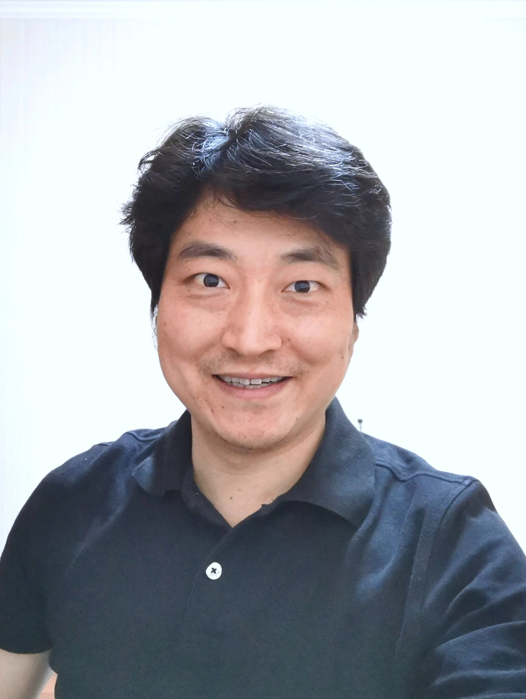
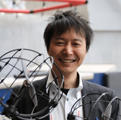
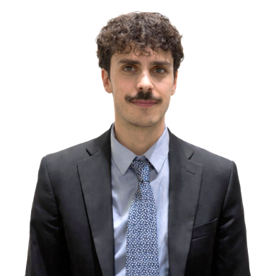
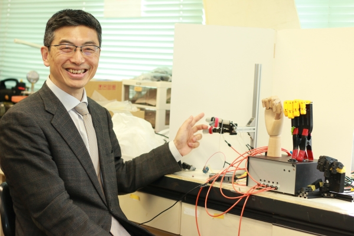
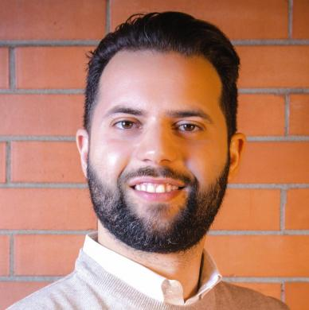

Embodying Asimov's First Law through Soft Robotics
Abstract / Speakers / Schedule / Call for Contributions / Topics / Organizers
Abstract
Asimov's First Law states that "a robot may not injure a human being or, through inaction, allow a human being to come to harm." This principle serves as the foundation of trust and safety in human–robot interaction. Soft robotics—with its compliant materials, deformable structures, and adaptive control—provides a tangible path to realizing this ideal. This workshop will highlight recent advances in soft robotics for wearable technologies, assistive systems, and human–robot collaboration, and will discuss how to define, verify, and balance safety with performance.
Invited Speakers





Schedule
| Time | Type | Speaker | Title |
|---|---|---|---|
| 08:50 | Opening | Opening remarks | |
| 09:00 | Invited Talk | Kenji SuzukiUniversity of Tsukuba | From Mechanical Compliance to Behavioral Safety in Embodied Cyborg Systems |
| 09:25 | Invited Talk | Niccolo PagliaraniScuola Superiore Sant'Anna | Soft Manipulation as the Starting Point for Embodied Safety |
| 09:50 | Invited Talk | Shuguang LiTsinghua University | Inflatable Fluid-Driven Origami-Inspired Artificial Muscles (IN-FOAMs) |
| 10:15 | Demo | Yiyuan ZhangNational University of Singapore | Soft Responsive Materials Enhance Humanoid Safety |
| 10:30 | Poster | Yuto TanizakiChiba University | Safe Self-feeding Manipulation Analysis Framework Using Soft Actuators |
| 10:40 | Poster | Tsukasa KumagaiChiba University | Fundamental Study on a Robot with High Physical Contact Safety and Functional Reconfigurability for Nursing Support |
| 10:50 | Break | Coffee break · 15 min | |
| 11:05 | Invited Talk | Wenwei YuChiba University | — |
| 11:30 | Invited Talk | Kenjiro TadakumaOsaka University | Inherently Safe Mechanisms for Soft Robotics |
| 11:55 | Invited Talk | Yong-Lae ParkSeoul National University | Blowing Up Expectations: Balloons in Soft Robotics |
| 12:20 | Demo | Ayato KanadaThe Univ. of Electro-Communications | Distal-Stable Beam for Safe Human–Robot Interaction |
| 12:35 | Poster | Lorenzo VignoliEPFL | Programmable Compliance as Embodied Safety in Soft Continuum Robots |
| 12:45 | Poster | Pablo E. Tortós-VinocourChiba University | Real-Time FEM-based Manipulation of Deformable Objects using Soft Actuators for Hand Rehabilitation |
| 12:55 | Break | Lunch break · 65 min | |
| 14:00 | Invited Talk | Yukie NagaiUniversity of Tokyo | Rethinking Safety through Physiological Embodiment |
| 14:25 | Poster | Ngoc-Duy TranThe University of Tokyo | Probe-to-Grasp Manipulation Using Self-Sensing Pneumatic Variable-Stiffness Joints |
| 14:35 | Poster | Yuna TannoChiba University | Research on Control Systems for Soft Actuators for Minimally Invasive Surgery |
| 14:45 | Poster | Tung D. TaThe University of Tokyo | Simultaneous Position and Stiffness Control of Continuum Robot By Multiagent Reinforcement Learning |
| 14:50 | Invited Talk | Seppe TerrynVrije Universiteit Brussel | Material and Sensing Strategies for Resilient and Safe Robotics |
| 15:15 | Invited Talk | Andrea BertoliniScuola Superiore Sant'Anna | — |
| 15:40 | Break | Coffee break · 15 min | |
| 16:00 | Closing | Closing remarks |
Call for Contributions
Download CFP Poster (PDF)📢 We Welcome Your Contributions!
We invite researchers, practitioners, and students to contribute to this workshop through poster presentations or live demonstrations.
📊 Poster Presentation
Format: 8-minute flash talk + poster session
Submission: PDF file of your poster
🤖 Live Demonstration
Format: 12-minute demo talk + hands-on session
Submission: PDF file of poster (optional) + demo video
📅 Important Dates
📧 Submission: No requirement on size or format. Please send your materials to shao-qi@g.ecc.u-tokyo.ac.jp and fill in this form: https://forms.office.com/r/YB5FKNRb1k
Topics of Interest
Workshop Organizers

Workshop Description
For decades, the vision of robots as helpful companions in our homes, schools, and hospitals has been a driving force in technological innovation. However, this vision is fundamentally constrained by a single, critical challenge: safety. Traditionally, robots have been rigid, powerful, and fast—traits that make them highly effective in structured industrial settings but inherently dangerous in the chaotic, unpredictable environments of human daily life.
The First Law of Robotics, as proposed in Isaac Asimov's seminal works, holds the highest priority among his Three Laws. It states: "a robot may not injure a human being, or through inaction, allow a human being to come to harm." This principle has long served as the guiding ethical ideal for robotics. Historically, attempts to uphold this law have focused almost exclusively on software: complex sensors, redundant control systems, and sophisticated algorithms designed to prevent a rigid robot from making a harmful mistake. This paradigm, however, is incomplete. A 100 kg steel robot, even when perfectly controlled, remains a significant hazard by its very presence. A system failure or an unexpected interaction could still lead to catastrophic injury.
This workshop addresses this fundamental gap by focusing on "Embodied Safety," which is the principle that a robot's physical design, not just its programming, must be the first line of defense. Soft robotics represents a paradigm shift in this pursuit. By utilizing compliant materials, deformable structures, and bio-inspired designs, soft robots are inherently safe. Their bodies can absorb impacts, conform to unexpected contact, and interact with humans with a gentleness that rigid robots cannot replicate. This technology provides a physical, tangible pathway to fulfilling the true spirit of Asimov's First Law, expanding the notion of safety from a purely computational concern to an integrated design challenge that encompasses material, structural, and control dimensions.
Workshop Objectives
1. To Showcase State-of-the-Art: Present and discuss the latest advancements in soft robotic systems designed for close human proximity, including breakthroughs in materials, fabrication, sensing, and control.
2. To Explore Key Application Domains: Highlight the transformative impact of soft robotics in critical areas such as wearable technology, assistive and rehabilitation devices, safe human-robot collaboration, and educational tools.
3. To Bridge Disciplinary Gaps: Foster cross-disciplinary dialogue between material scientists, roboticists, and HRI specialists to co-design robots where material properties and control strategies work in unison.
4. To Identify Future Challenges: Collaboratively identify remaining hurdles—such as durability, power, and scalability—and outline a research roadmap for creating robust, reliable, and truly safe soft robots.
|
Living with Robots Safely Workshop @ IEEE RAS RoboSoft 2026 |